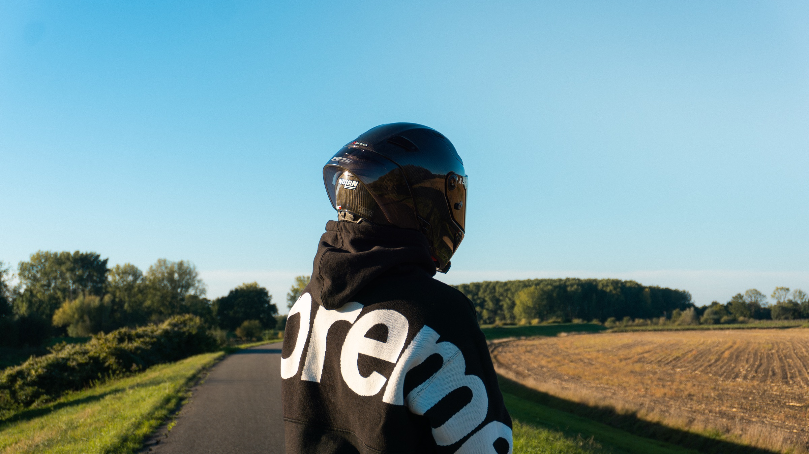
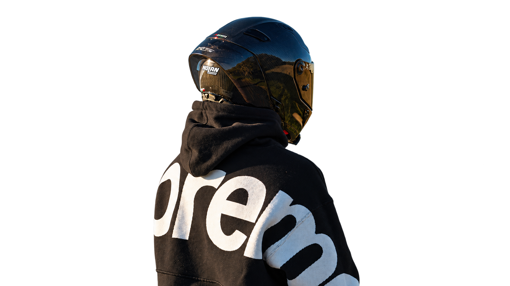

ANTWERPEN / BELGIË
PORTFOLIO
Mauro
Van de kerckhoven
Een selectie van webdesign en visuele verhalen: van persoonlijke projecten tot samenwerkingen.
NO RISK
NO STORY
Ik ben Mauro, student uit de grafische wereld. Ik werk aan UX/UI, branding, grafisch ontwerp, websites, fotografie en creatieve ontwikkeling. Ik blijf mijn designskills steeds verder aanscherpen. Met deze portfolio laat ik graag zien waar ik mee bezig ben.
NEEM CONTACT OP→3D-model laden…
TOOLS / PROGRAMMA’S01 — 09
- 01Figma
- 02Photoshop
- 03Illustrator
- 04InDesign
- 05Blender
- 06VS Code
- 07ChatGPT
- 08WordPress
- 09GitHub
SAMEN
AAN DE SLAG?
Heb je een project, idee of wil je gewoon kennismaken?
Stuur me gerust een bericht.